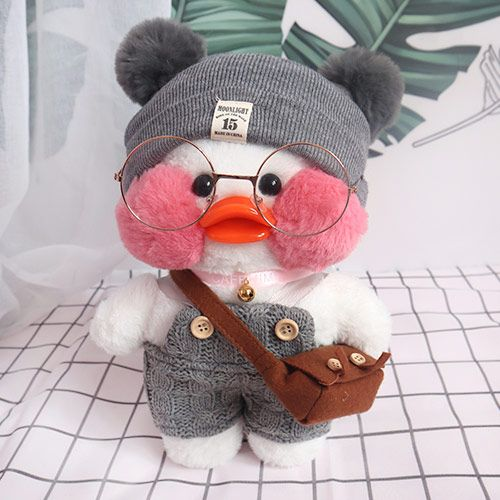

Milka
Milka is yellow duck. Milka love strawberry berrys.
Milkas's favorite Sanrio type is My Melody.
Zefirka
Zefirka is white duck. Zefirka like sanrio type Kuromi.
Stesha
Stesha is to yellow duck. Stesha's favorite sanrio type is Keroppi.
Stesha like blueberry berrys.